friendly, probably.
$ cat about.md
[Two or three sentences about who you are. Keep it a little cryptic -- the avatar does the talking. What you build, what you break, what you're curious about.]
[Optional second paragraph: how you got here, or what you're chasing next.]
$ tail now.log
- [a thing you're working on]
- [a thing you're learning]
- [a thing you're reading / listening to]
$ ls ~/stack
- languages
- [python] [rust] [typescript]
- tools
- [linux] [neovim] [docker]
$ ls ~/projects
- [project-one][one line on what it does]
- [project-two][one line on what it does]